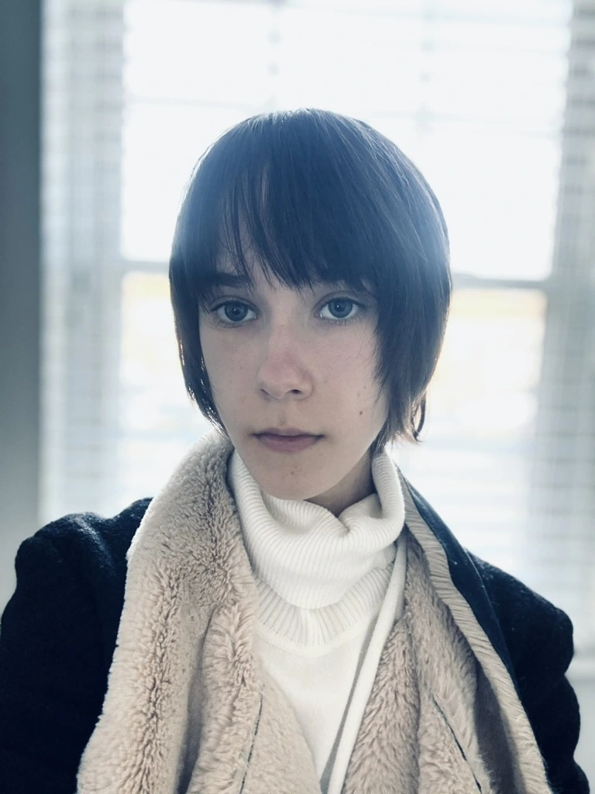

Kira Iovenko is a passionate student and artist from Ukraine. Her artistic journey began during childhood; her self-taught hobby for drawing laid foundation for her vibrant and expressive perspective.
After moving to the United States in 2018, Kira pursued formal art education, partaking in various art classes that helped refine her skills and broaden her artistic techniques. She finished Art II and Art III level courses offered at her school, focusing on painting, drawing, and other multi-media projects. She plans to take an AP-level course next year. A passion for expression also deepened her connection to her heritage, depicted in through cultural themes, designs, and colors. With a keen eye for detail, Kira aims to capture vivid beauty of both reality and fantasy in her artworks.
So far, her works have been featured in several school, as well as local, art shows. In addition, her works were recognized in the Scholastic Art and Writing Awards program, earning a Silver Key and four honorable mentions in the 2025 competition. Kira continues to develop her craft, seeking new challenges and opportunities to express her artistic vision.